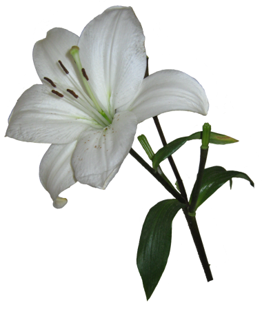
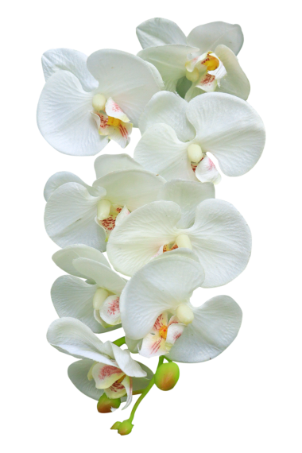

Lírios
O lírio é uma planta originária da Ásia, Europa e América do Norte, mas também existem algumas espécies que se encontram na China e no Japão. Com a possibilidade de render lindos arranjos e buquês, o lírio é um dos tipos de flores mais conhecidas e queridas por floristas e apreciadores de plantas. Apesar do lírio precisar de bastante iluminação para o seu desenvolvimento, não é recomendado que ele fique diretamente exposto ao sol, principalmente nas horas mais quentes do dia, porque assim o substrato pode secar completamente, o que faz o lírio desidratar, por isso, o lírio sempre deve ser cultivado em locais com meia sombra. Uma observação importante é que apesar do lírio não poder ficar exposto diretamente ao sol, é importante que o vaso da planta receba luz ao menos durante metade do dia, porque se os lírios ficarem a maior parte do tempo na sombra, eles podem começar a se contorcer e crescer na direção do sol. O lírio é conhecido por ser uma planta que se adapta super bem em climas frios. Apesar de suas folhas caírem, o lírio resiste as baixas temperaturas e fica em estado de dormência até que possa florescer novamente.
Girassol
Originário das Américas, o girassol é uma planta que possui grande importância econômica, ambiental e cultural. O girassol, cujo nome científico é Helianthus annuus, é uma planta que encanta com sua imponente presença e sua capacidade de seguir o movimento do sol ao longo do dia. Originário das Américas, especialmente da América do Norte, é reconhecido por suas pétalas amarelas vibrantes e seu centro robusto, composto por centenas de pequenas flores.Se a ideia é cultivar o girassol dentro de casa ou apartamento, o vaso é a melhor opção. Nesse caso, é preciso escolher um vaso grande e investir nas plantas anãs ou de menor tamanho. Vaso com capacidade para pelo menos 20 litros de solo é o ideal para garantir espaço adequado e as raízes se desenvolverem.Girassóis não lidam muito bem com mudanças, então tente plantar diretamente no vaso em que deseja que as flores fiquem. É importante também que você deixe-o em um local ensolarado, para que possam receber de 6 a 8 horas de luz direta do sol por dia.
Orquídeas
As orquídeas são plantas epífitas, que vivem sob troncos e galhos de árvores. Por isso, apesar de serem espécies tropicais, não apreciam a luz solar direta. O melhor local para deixá-las é à sombra de uma árvore no jardim ou outro local externo protegido. Já se o cultivo for dentro de casa, coloque-a próxima de uma janela bem iluminada, que receba luz solar no começo do dia ou pelo final da tarde. Se notar que as folhas da sua orquídea estão muito escuras, pode ser um sinal de que a planta deve ser colocada em um local com mais claridade. Já se as folhas aparecem amareladas ou queimadas, é melhor mantê-la em um local que receba menos sol.A principal orientação para a regas de orquídeas é que a água seja colocada uma vez por semana em períodos mais quentes, e a cada 15 dias no inverno. A rega deve ser feita de forma abundante, de preferência no período da manhã. Isso evita que as raízes fiquem úmidas durante a noite, o que pode causar o seu apodrecimento ou o surgimento de pragas. Além disso, a frequência pode variar conforme a espécie, temperatura, substrato e umidade do ambiente de cultivo. Antes de regar, o ideal é que você coloque a ponta do seu dedo no substrato. Se estiver seco, pode molhar; caso o dedo saia sujo ou sinta o substrato úmido, a rega pode esperar mais uns dias.
Margaridas
As margaridas são flores com uma grande variedade de cores e cada uma delas tem um determinado significado, também são muito decorativas e não requerem demasiados cuidados, apenas muito sol o que as faz aguentar temperaturas extremas. O melhor momento para plantá-las é com a chegada da primavera.As margaridas precisam ser regadas com frequência. Elas não devem ser encharcadas porque poderiam morrer, mas devem ser regadas a cada 2 ou 3 dias.As margaridas costumam ter um tamanho entre 25 e 70 centímetros se as plantar em vasos. Lembre-se primeiro de cultivá-las em um lugar muito ensolarado da casa, se possível, perto de uma janela.A terra onde crescem deve ser argilosa e requer também de uma boa drenagem.Para cuidar das margaridas, o ideal é que cresçam em um lugar com temperaturas agradáveis, entre 15 e 25ºC. Mas como é uma flor dura, aguenta bem as geadas.
Espero que meu artigo tenha sido de alguma ajuda!